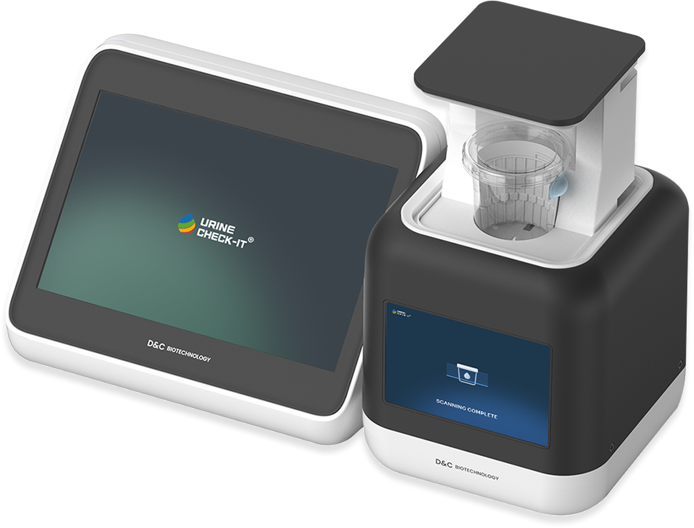
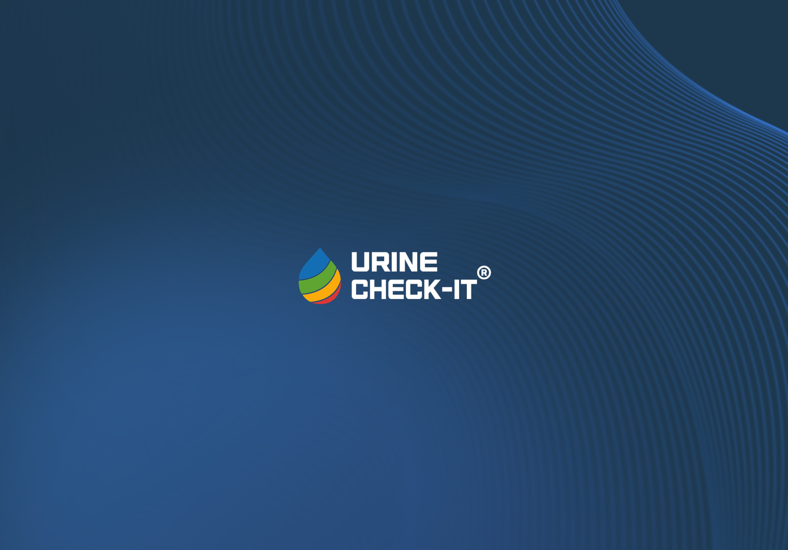
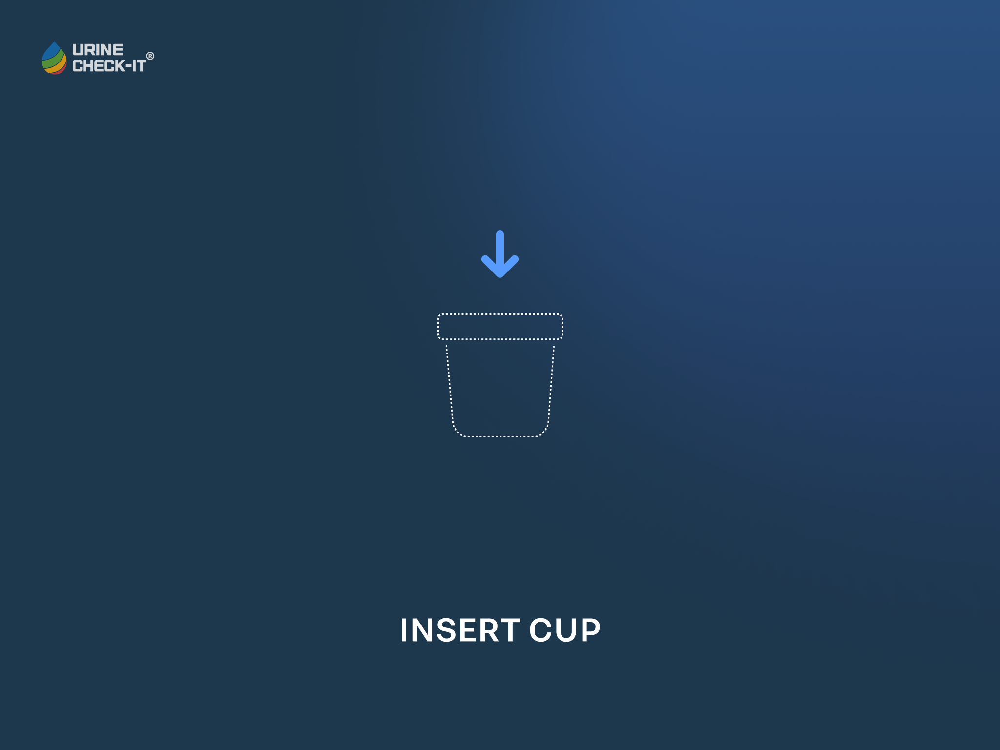
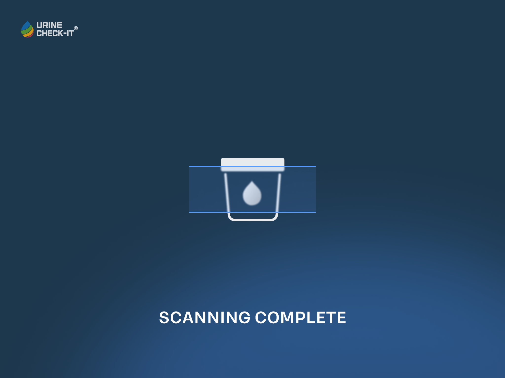
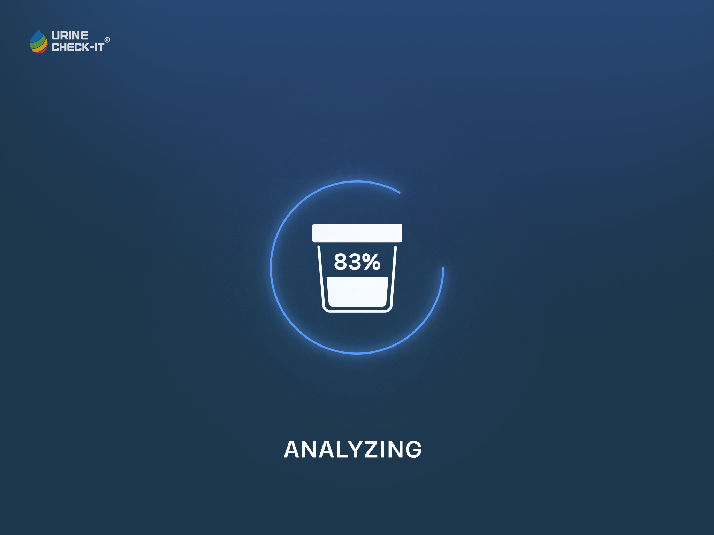
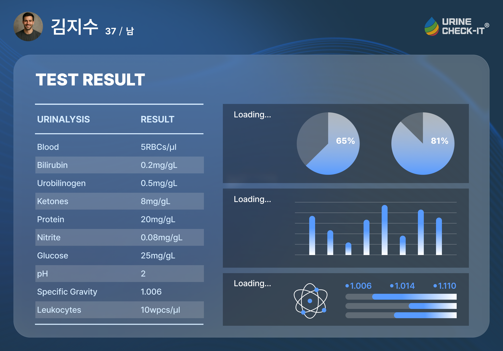

PRODUCT · MEDICAL DEVICE
URINE
CHECK-IT
디지털 소변 검사기 GUI
D&C Biotechnology 제품 UX 제안
Category
UX/UI DesignProduct UX
Year
2025
Tools
FigmaAdobe CC
Contribution
UX/UI 100%제품 디자인 제외

Overview
처음 쓰는 사용자도
안내 없이 검사를 마칠 수 있도록 설계했습니다.
D&C Biotechnology의 디지털 소변 검사기에 들어가는 GUI 제안 프로젝트입니다.
컵을 넣는 순간부터 스캔, 분석, 결과 확인까지 검사 과정을
한 화면에 한 동작씩 나누고,
10개 항목의 분석 결과를 한 화면에서 읽을 수 있도록 정리했습니다.
검사 순서
처음 쓰는 사용자는 무엇부터 해야 하는지 알기 어려움
대기 중 불안
스캔과 분석 중 진행 상황이 보이지 않으면 기기가 멈춘 것처럼 느껴짐
많은 결과 항목
10개 항목의 수치를 한 번에 보여주면 중요한 값을 파악하기 어려움
My Role
제품 UX 기획 · 검사 단계별 화면 흐름 설계 · GUI 디자인 · 결과 대시보드·데이터 시각화
Screen Flow
검사 과정을
한 화면에 한 동작씩 나누었습니다.
컵 삽입부터 결과 확인까지, 사용자가 각 단계에서 하나의 동작에만 집중할 수 있도록 화면 흐름을 설계했습니다.

Main
- 문제
- 검사 순서 · 처음 쓰는 사용자가 무엇부터 해야 할지 모름
- 해결
- 시작 버튼 하나만 둔 첫 화면

Insert Cup
- 문제
- 검사 순서 · 컵을 어디에 어떻게 넣는지 알기 어려움
- 해결
- 컵 삽입 위치를 그래픽으로 안내

Scanning
- 문제
- 대기 중 불안 · 스캔 중 화면이 그대로면 기기가 멈춘 듯 느껴짐
- 해결
- 지금 스캔 중임을 화면에 표시

Analyzing
- 문제
- 대기 중 불안 · 분석이 얼마나 남았는지 알 수 없음
- 해결
- 분석 진행률을 %로 표시
Result Dashboard
10개 검사 항목을
한 화면에서 읽을 수 있도록 정리했습니다.
결과 화면은 수치를 읽는 영역과 비율을 보는 영역을 나누어, 많은 항목을 한 화면에서 읽을 수 있도록 정보 위계를 설계했습니다.
- 문제
- 많은 결과 항목 · 10개 항목의 수치를 한 번에 보여주면 중요한 값을 파악하기 어려움
- 해결
- 10개 항목을 수치 목록과 원형·막대 차트로 나눠 한 화면에 정리

Reflection
화면 하나보다
검사 전 과정의 흐름을 먼저 설계했습니다.
대기 시간이 있는 장비일수록 진행 상태를 보여주는 화면이 사용자의 신뢰에 영향을 준다는 점을 확인했습니다.
각 단계에서 지금 무엇을 해야 하는지, 기기가 무엇을 하고 있는지가 먼저 보이도록 정리한 프로젝트입니다.